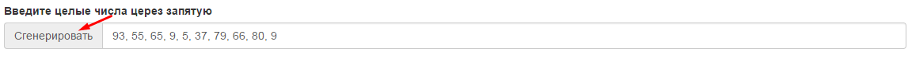
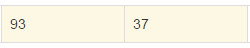
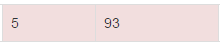
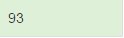

-
Запишите целые числа через запятую. Пример: 93, 55, 65, 9, 5, 37
Или нажмите кнопу "Сгенерировать", тогда приложение автоматически создаст набор чисел, которые можно отсортировать  - Нажмите кнопку "Сортировать", тогда начнется процесс сортировки
- Если в таблице, яцейки светятся желтым цветом , значит значения сравниваютс между собой
- Если в таблице, ячейке светятся красным цетом , значения меняются местами
- Если в таблице ячейки светяся зеленым цветом , значения уже отсортированы